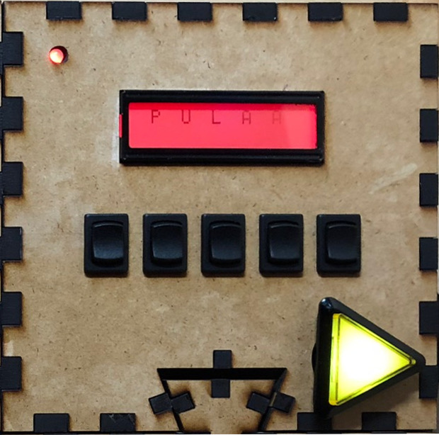

Put words here about how smart you are if you want, or delete this whole section. I'm on a plane and running on 4 hours of sleep so I don't know if this is actually a good idea or if its too corny.
This was also a class assignement for the Olin College ENGR 3110: Elecanisms course, so there were a few requirements we had to follow. It had to be a penny-operated arcade game with significant mechainical, electrical, and software components, and the majority of our firmware needed to run on a custom Microchip PIC24F board provided by a professor.
To begin a game, one player steps into the booth behind the curtain. As soon as they insert a penny, the timer starts and the defusal begins. The other players use a printed or digital copy of the manual to instruct the defuser on how to solve the puzzles in front of them. Many of these puzzle modules can generate strikes, getting the defuser one step closer to "explosion." If you get three strikes or the timer runs out before all of the modules are solved, the game ends. If all connected modules are completed before the timer counts down, you successfully defuse the bomb!
The instructions in the manual are written to be intentionally confusing to the readers as well as the defuser, so good communication is key. To solve the modules, you need to be able to communicate not only which module you are working on, but also the initial state of the bomb, a serial number and status lights, a language you may or may not know (Morse code), and more.
Development
System Overview
In addition to the PIC24 microcontrollers,we used an Arduino to control the coin acceptor and overhead light in the booth. An early iteration of the game used a Neopixel strip which used a custom Adafruit C++ library that we decided not to port to C, so we used an Arduino to control the overhead light and initialize the game once a coin was inserted. Ultimately, we chose to use a simple LED bar to imitate a florescent light that we could have easily controlled with the PIC boards, but we left the Arduino portion of the system as-is. Arduino code can be seen here.
The coin acceptor and Vin of the Arduino were connected to a 12V DC power supply. Once a coin was inserted, the Arduino turned on a relay to connect the PIC Vin rail to the 5V power supply and turned on the overhead light. As the game progressed, the Arduino randomly flickered the overhead LED bar to imitate a low-quality florescent bulb. The relay connected the 5V power supply to the bomb's 5V rail, which also supplied the Vin of each PIC microcontroller. Once they had power the modules ran their game code, including an initialization stage, a game stage, and depending on the player's success could progress to a win state.
Modularity
We decided to make the game modular from the beginning, so we created a number of semi-independent games that could easily connect and detach from the main structural frame of the game. Our designs for the frame changed as the project went on, so we wanted to be sure that the code we wrote worked with any number of modules. This also meant that if we only made a few functioning modules the game could still be playable, and if we made more modules than could fit on the frame, the puzzle modules could be swapped out for different play experiences.
To do this, all of our modules had a DE-9 connector on the back that made contact when they snapped into the main frame of the game. We used the pin layout on the right to connect the modules to power, ground, and the I2C bus for communication with the master module. We chose this layout to isolate the I2C bus as much as possible from noise from our system. we ended up not having any issues with noise interfering with I2C data, but the blank connections left floating were initially reserved for ground in case we needed to further isolate the I2C signal.
Module State Machines
There are two main categories of modules in the game: the master module which controls the timer, serial number and status LEDs, number of strikes, speaker, and win condition, and the puzzle/ follower modules that each have their own bomb defusing game. We controlled these modules with finite state machines based on the FSM backbone suggested by one of our professors.
Each of the state machine functions followed this basic formula:
void statename(void) {
if (state != last_state) { // if we are entering the state, do initialization stuff
last_state = state;
// other initialization code goes here
}
// State task code goes here
if (condition1) { // Check for state transitions
state = otherstate1;
}
if (condition2) {
state = otherstate2;
}
if (state != last_state) { // if we are leaving the state, do clean up stuff
// state exit code goes here
}
}
The state machine for the master module has four possible states: idle, run, end with a win, and end with a fail.
The state machines for the puzzle modules are a little more complicated. Initially, we created a basic state machine for the puzzles that included setup, run, solved, and end with a win or fail that mirrored the master module's end states. However, some of the modules we wrote also needed a state machine within their run states to control the functionality of the puzzle itself. We theoretically could have modified the run state to be multiple states that made gameplay happen, but that would have required us to modify the startup and cleanup of each of those expanded-out states, making them much different from the others. Also, since a player could win from any of these theoretical run states, there would have to be a lot of repeated code.
To solve this, we used a nested state machine to run both the basic module functions as well as keep track of game logic. To do this, the run state in the main state machine used conditional statements to call a gameplay function in a secondary state machine. Since this FSM was separate, the run state was still active at the same time as the gameplay state, so things like strike polling and the completion LED would not be interrupted. If the gameplay state machine determined that the puzzle was solved, it would set the main state machine to solved, at which point the run state could do its cleanup tasks before the win state took over. On the other hand, if the master module signaled, for example, that the game was over (due to strikes or time running out) conditionals in the run state could reset the overall module state to the correct state.
Transmitted I2C Data
Once we were able to send data back and forth between our master and follower modules, we needed to decide what data we would send and how that data would be represented. We decided on the system below, where the eight bits on the left represent what the master modules sends to the puzzle modules, and the eight bits on the right represent what the master module sends to the puzzle modules.
The master module needs to send a lot of different information to the puzzle modules, including the serial number, status LEDs, and indications that the game has begun, has been won, or has been lost. These pieces of information change the win condition of some of the modules in the case of the former two, and the behavior of the individual completion LEDs on each module in the case of the latter. In the peripheral_core.c file, included in the compile files of all the puzzle modules, we use a case statement based on the data prefix to determine which variable to update with the final five bits of the transmitted byte.
In reverse, the puzzle modules need to transmit infortmation to the master module, most importantly if the module has been solved or if there is a new strike. We also left four bits available as a spot for a potential error code, but since we were able to debug modules independently we did not implement any error coding. Since only completion and number of strikes were of interest to us, we used if statements to move these bits into their appropriate variable.
Debug Strategies
Throughout the project, but especially when working with I2C, we needed to be able to debug with something more advanced than just the onboard indicator LEDs. Our two main methods were using dedicated digital debug devices like the Saleae and Analog Discovery, and using an audio jack to USB cable to output UART data to the terminal.
The Analog Discovery and Saleae were important tools in being able to see exactly what bits, if any, the I2C hardware on the microcontrollers was putting out. The team found the Saleae especially helpful and much easier to use, and was able to borrow one for a lot of the project to get our I2C communication up and running.
The audio jack/ UART interface to debug was useful as we ironed out any logic errors in the gameplay of the modules themselves. We used picocom to view the information we printed with sprintf(), which allowed us to see not only values of variables that affected gameplay, but also debug text that indicated the state machine was in a certain state, or that a certain portionof code had run.
The Modules
Each module runs on its own PIC24F microcontroller, which allowed us to debug each puzzle separately. While the master module is unique, the puzzle modules are all based on a template file, and also inherit functionality from another included file.
Master Module
The master module holds the leader PIC microcontroller and serves as the master on the I2C bus. To the player, this module is for data display only. A seven segment display shows the time remaining in the game (5 minutes is the default) and how many strikes they have earned. On the top side of the module, a 2x16 LCD screen displays a randomly-generated serial number, as well as colored LED indicators for the randomly-generated flux, rtc, and eps information.
See the code here

Code Word Module
The Code Word module is most closely based on the "Keep Talking and Nobody Explodes" game. In it, players see a readout of a five letter word. They must use the switches to cycle up and down through six possibilities for each of five letter until they can make one of the words from the manual. The rest of the players can use different strategies to help their teammate rule out different words. Once they find a word, the player can push the submit button to check their accuracy. If it is correct, the module is solved and that portion of the bomb is defused. Otherwise, they earn another strike.
See the code here
Morse Code Module
Players watch the flashing red light to decode the Morse code message. If they know Morse code they can pass on the word to their teammates with the manual, otherwise the manual has a table that demystifies the dots (a short flash) and dashes (a long flash) into letters and words. Once you know the secret word, dial in the corresponding frequency and push the button to submit.
See the code here
Needy Module
The Needy Module doesn't do much, but it still had needs. When the status bar gets to the red zone, press the button to flush your capacitors and return to a safe state. Let the beeping keep going, and you'll earn a strike.
See the code here
Switches Module
The switches module presents players with eight switches in two rows, with confusing labels that might easily be mistaken or mixed up. Based on how many of the switches' initial positions match up with two lists, players follow one of three protocols to disarm the module.
See the code here

Cables Module
The Cables Module presents players with color-coded 3.5mm audio cables and ports. Depending on which cables are plugged in and which of the FLUX, RTC, and EPS LEDs are illuminated, players plug, unplug, and rearrange the cables until the module is complete.
See the code here

Combo Lock
A digital versison of the analog staple, the three-number code you need to crack here is based on arithmetic on the serial number.
See the code here